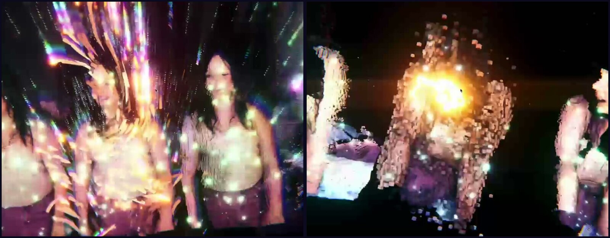
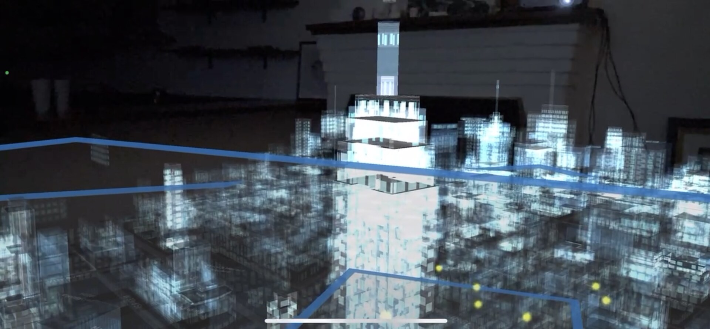
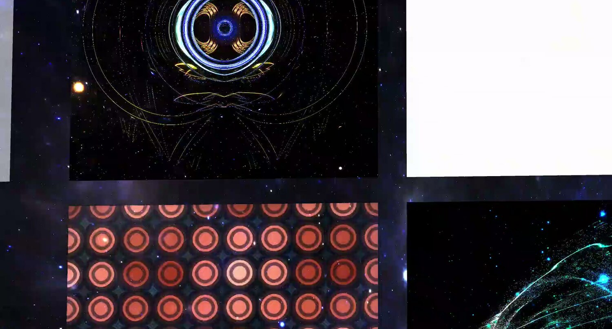
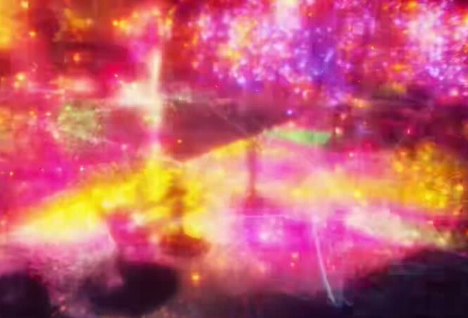
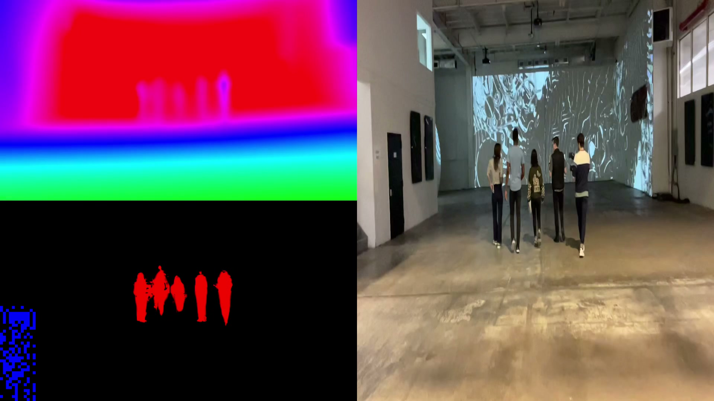
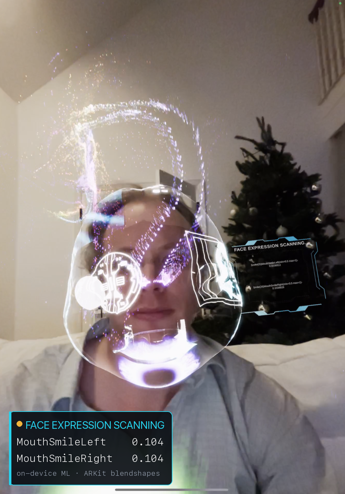
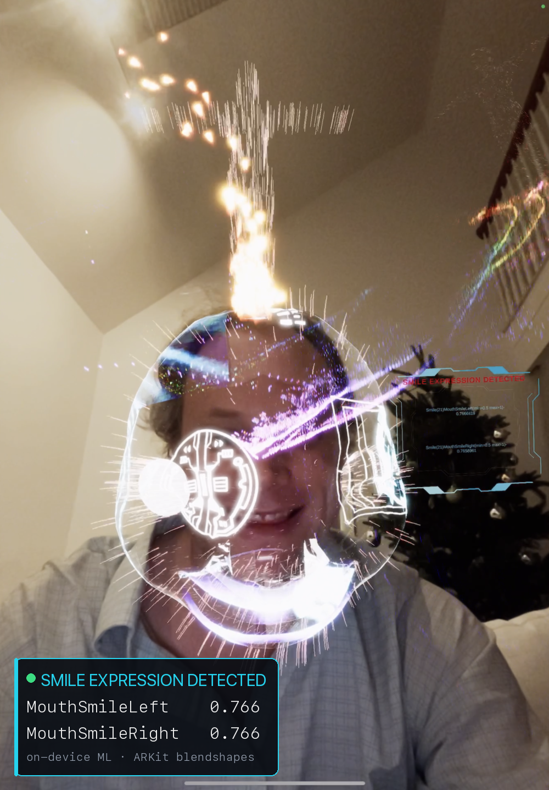

Visual Highlights



We present Portals, a deployed systems architecture that bridges 4D world-model research and persistent spatial experiences on phones, smart glasses, and augmented-reality headsets. The defining shift in spatial computing is not from 3D to 4D, but from stateless scenes to stateful worlds—scenes that persist, compound, and stay editable across sessions, devices, and users. Delivering such worlds on constrained hardware is the central systems problem: they must render in real time, survive revisits, and remain authorable through voice, gesture, and no-code tools. Built on 3D Gaussian Splatting and informed by 4D-GS and Generalizable Human Gaussians, Portals has been deployed on iOS, with web-based viewers (including Apple Vision Pro) for reconstructed environments, volumetric humans, and holographic spatial media. We contribute: (1) an edge-device runtime built around LOD-adaptive Gaussian splatting (SPAG) and a shared spatial-media compute substrate that fuses depth, stencil, audio, and ML-pose channels, driving 360+ source-agnostic VFX effects at 60 fps on iPhone 14 Pro (2.7–4.1× speedup); (2) a persistent geospatial scene-state architecture with layered world metadata, reloadable scene payloads, and anchor-guided re-alignment across sessions; (3) a creator-facing composition pipeline that bridges reconstruction and generation through VFX composition, voice-driven semantic actions (with on-device intent parsing and cloud fallback for ambiguous utterances), and no-code authoring; and (4) benchmark axes for evaluating 4D world models under deployment constraints such as mobile rendering efficiency, persistent scenes, and editable world state. Prior clinical deployment of volumetric AR at Memorial Sloan Kettering established the real-time rendering primitives underlying this work.
@inproceedings{portals2026,
title={Portals: Persistent, Editable 4D Spatial World Models on Edge Devices},
author={Tunick, James A. and Brant, Ryan and Pennock, Jacob D. and Kasowski, Justin},
booktitle={CVPR 2026 Workshop on 4D World Models: Bridging Generation and Reconstruction},
year={2026}
}
All imagery captured on physical devices — iPhone 14 Pro, iPad Pro, and Apple Vision Pro.











System architecture showing the persistent world stack, shared spatial-media substrate, and deployment surfaces across mobile, headset, and web clients.

Content pipeline across capture, reconstruction, editing, and deployment. In the shipped system, asset ingestion centers on phone capture, photogrammetry, and text or reference-image generation, while voice, direct manipulation, and no-code controls act as authoring surfaces over the same persistent scene graph.

Model and representation diagrams summarizing how environments, volumetric humans, and spatial media fit into the same editable 4D world framework.

Level-of-detail and performance figure highlighting mobile-first runtime constraints and the efficiency tradeoffs required for edge deployment.

Comparison of Portals against prior systems along persistence, editability, and deployment-relevant world-model axes.
Extended capability context on the deployed Portals / XRAI platform — the data-driven, ML/AI, and HCI dimensions the system embodies, beyond the camera-ready paper.
what the system sees, measures, and anticipates — on device
| Capability | Most-valuable use case | Mobile / Headset | Web |
|---|---|---|---|
| 📏Metric depth sensing | True-scale placement & measurement | 🟢 | 🟡 |
| ✂️People occlusion & matting | People walk in front of portals; clean cutouts | 🟢 | 🟡 |
| 🏷️Scene mesh + semantic labeling | Content reacts to floors, walls, objects | 🟢 | 🟡 |
| 🟦Surface / plane detection | Snap & anchor content to real surfaces | 🟢 | 🟡 |
| 🏠Room-layout understanding | Instant scene scaffolds from a room scan | 🟡 | 🟡 |
| 🪟Glass / window de-occlusion | Portals stay visible through glass | 🟡 | 🟡 |
| 📍World-locked geo-anchoring | City-scale, GPS-locked persistent portals | 🟢 | 🟡 |
| 🔎Object & image recognition | Marker & product-triggered experiences | 🟢 | 🟢 |
| 🔤Text, code & saliency reading | Read signage; attention-aware overlays | 🟢 | 🟡 |
| Capability | Most-valuable use case | Mobile / Headset | Web |
|---|---|---|---|
| 🧭User-intent inference | The right tool surfaces before you ask | 🟢 | 🟢 |
| 🔮Needs prediction & anticipation | Anticipates your next step | 🟡 | 🟢 |
| 📊Behavior modeling | Personalizes to how you move & create | 🟡 | 🟡 |
| 😊Affect & expression sensing | Empathetic response to mood & expression | 🟢 | 🟢 |
| 📈Trajectory prediction | Predicts where the ball or person is heading | 🟡 | 🟡 |
| 🕸️Relationship mapping | Maps how people, objects & spaces relate to each other | 🟡 | 🟢 |
| Capability | Most-valuable use case | Mobile / Headset | Web |
|---|---|---|---|
| 🗣️Voice + vision understanding | Ask about what you're looking at, hands-free | 🟢 | 🟢 |
| 👉Open-vocabulary “point & ask” | Point at anything, get an answer or action | 🟡 | 🟢 |
| ☝️Raycast pointing — near & far selection | Point a finger to select & act on objects at any distance | 🟢 | 🟡 |
| 🔁Perceive → understand → act loop | Sees, understands, and acts in one loop | 🟡 | 🟢 |
| Capability | Most-valuable use case | Mobile / Headset | Web |
|---|---|---|---|
| 🎯Trajectory & projectile detection | Ball-flight & shot tracing from a phone — no radar | 🟡 | 🟡 |
| ⚡Real-world speed from video | Swing & body speed from a single camera | 🟡 | 🟡 |
| 🦴Full-body 3D pose & skeleton | Form & technique coaching; live avatar drive | 🟡 | 🟡 |
| ✋Per-body-part keypoints | Fine motion (wrist/club) metrics; gesture control | 🟡 | 🟢 |
| 🚶Gait & motion-form analysis | Session-over-session tempo & plane deltas | 🟡 | 🟡 |
| 👥Multi-object tracking | People & props tracked for interaction | 🟡 | 🟢 |
🟢 demonstrated 🟡 in progress 🔒 capability level
Status reflects current maturity per surface. Contextual and agentic capabilities are shown at capability level.
the interchange format that makes a world portable
{
"xrai_version": "1.0",
"id": "…0001",
"author": {"type": "human", "id": "example"},
"origin": {"app": "example", "version": "1.0", "scene": "minimal"},
"scene": {
"anchors": [],
"entities": [
{"id": "cube_1", "type": "object.primitive",
"transform": {"position": [0, 0.25, -1.5], "rotation": [0,0,0,1], "scale": [0.2,0.2,0.2]},
"material": {"color": "cyan", "preset": "neon"}}
],
"relations": [], "events": []
}
}
| Capability | What it's for | Mobile / Headset | Web |
|---|---|---|---|
| 📄Portable scene manifest, geometry out-of-line | Tiny revisit traffic — structure travels, payloads stream on demand | 🟢 | 🟢 |
| 💾Persistent + editable world state | Save, re-open, mutate & re-version worlds across sessions, devices & users | 🟢 | 🟢 |
| 🧾Edit-history + per-object provenance | Replay creator intent; track source, license, generator, timestamps | 🟢 | 🟡 |
| 🧩Multi-asset typed container | One manifest routes primitive / splat / hologram / portal nodes to the right renderer | 🟢 | 🟢 |
| 🔀Cross-runtime portability | One .xrai decodes on many renderers via an open schema | 🟢 | 🟢 |
| ⏳Temporal validity windows | Content that appears only during an event, or on a schedule | 🟢 | 🟡 |
| 🧬Generative encoding — "store the rules, not the mesh" 🔒 | A compact seed / rules expand into a full world | 🟡 | 🟡 |
| Format | What it's for | Mobile / Headset | Web |
|---|---|---|---|
✨Gaussian splats (.splat / .ply / SPZ) | Photoreal captured environments; web-light delivery | 🟢 | 🟡 |
| 📦glTF 2.0 / GLB (runtime baseline) | Universal asset payload every runtime reads | 🟢 | 🟢 |
| 🍎USD / USDZ interop | Compose with the Apple / DCC ecosystem | 🟢 | 🟡 |
| 🎞️Volumetric video (depth + color) 🔒 | Records a hologram into a standard video texture — streams over ordinary codecs | 🟢 | 🟡 |
| 🧍Mesh + avatar interchange (FBX ↔ GLB, VRM) | Photogrammetry meshes, humanoid avatars with expressions | 🟢 | 🟢 |
| ☁️Point-cloud formats (PLY / E57 / LAS) | Scan data into the same scene graph | 🟡 | 🟡 |
🔗KHR_gaussian_splatting interop | Ride the emerging cross-platform splat standard | 🟡 | 🟡 |
| Capability | What it's for | Mobile / Headset | Web |
|---|---|---|---|
| 🗂️Spatial Scene Graph (SSG) | Hierarchy of (geometry, geo-anchor, time-window, LOD) — the core representation | 🟢 | 🟡 |
| 🔵Entity / relation / event / anchor model | Id-stable entities and relations that survive edits | 🟢 | 🟢 |
| ⚡Typed relations with runtime meaning | reacts-to-audio, tracks, parent-of — behavior, not just hierarchy | 🟢 | 🟢 |
| 🗣️Natural-language → scene-graph operations | Voice edits and direct manipulation hit the same structured ops | 🟢 | 🟢 |
| 🏷️AR scene understanding & semantic labels | Floors, walls, tables, faces, bodies typed with confidence | 🟡 | 🟡 |
| 🧭Faceted ontology (multi-axis) | Identity, time, scale, modality, provenance… as first-class axes | 🟡 | 🟡 |
| Capability | What it's for | Mobile / Headset | Web |
|---|---|---|---|
| 🔌Encode-anything → graph | Turn a webpage, repo, paper, or calendar into an XRAI graph | 🟢 | 🟢 |
| 🕸️Knowledge graph → spatial world | Nodes become objects/rooms, edges become portals, clusters become districts | 🟡 | 🟡 |
| 🌐3D force-graph visualization | Explore relationships as a live, navigable 3D graph | 🟡 | 🟢 |
| 🔭Semantic-zoom navigation | One continuous zoom from universe → district → artifact | 🟡 | 🟡 |
| 🧷Persistent cross-session memory | Worlds and knowledge compound instead of resetting | 🟢 | 🟡 |
| Capability | What it's for | Mobile / Headset | Web |
|---|---|---|---|
| 🖼️Text / image → 3D asset | Prompt an object or room-scale asset in seconds | 🟢 | 🟡 |
| 📷AI-assisted reconstruction | Publishable splats from a ~20-second phone video | 🟢 | 🟡 |
| 🌱Procedural world generation | Voice → procedural environments from seed + rules | 🟢 | 🟡 |
| 🎙️Voice / no-code authoring loop | On-device intent parsing (sub-ms) with cloud fallback; every path emits the same ops | 🟢 | 🟢 |
| 🎨Whole-scene neural style transfer | "Make everything look like ___" across the live scene | 🟡 | 🟡 |
| 🧑🎤Avatar generation | Person → avatar / volumetric double | 🟡 | 🟡 |
| Capability | What it's for | Mobile / Headset | Web |
|---|---|---|---|
| 🎆360+ source-agnostic real-time VFX | Console-grade effects at 60 fps on a phone | 🟢 | 🟡 |
| 🧱Shared compute substrate 🔒 | Depth → world / stencil / velocity computed once; each effect adds only render cost | 🟢 | 🟡 |
| 🎚️Multi-channel effect binding | Depth + stencil + audio + pose auto-resolved across effect conventions | 🟢 | 🟡 |
| 🫧Body-driven / stencil-masked VFX | Sparks, embers, trails that hug a live person | 🟢 | 🟡 |
| 🎥Live + recorded holographic media | Record → edit → replay; effects work on live and decoded alike | 🟢 | 🟡 |
| 🛰️Live hologram room (browser ↔ iOS) | Share a live hologram across app and browser | 🟡 | 🟡 |
| Capability | What it's for | Mobile / Headset | Web |
|---|---|---|---|
| ⚛️LOD-adaptive Gaussian splatting (SPAG) | Panoramic image → editable 3D Gaussians; four-tier LOD (2.7–4.1× speedup) | 🟢 | 🟡 |
| 🎛️Adaptive quality controller | Live FPS + thermal tuning holds the 16.7 ms frame budget | 🟢 | 🟡 |
| 📱Mobile-first / edge rendering | 60 fps iPhone 14 Pro · 57 fps Galaxy S23 — no cloud required | 🟢 | — |
| 🔺Mesh / PBR pipeline | Standard glTF / URP path for classic assets | 🟢 | 🟢 |
| 🌐WebGL / WebGPU web rendering | Graph + scene viewers in the browser | 🟡 | 🟢 |
| 🧩Multi-runtime adapters | One document, many engines (Three.js + Unity locked; others in progress) | 🟢 | 🟡 |
| Technique / format | Best at | Mobile | Editable | LOD | Web-light | Our call |
|---|---|---|---|---|---|---|
| 3D Gaussian Splatting (3DGS) | Photoreal captured scenes | 🟡 | 🟡 | 🟡 | 🟡 | baseline |
| SPAG — Spherical Pixel-Aligned Gaussians | Panorama → editable splats · LOD · O(1) edit | 🟢 | 🟢 | 🟢 | 🟡 | ★ mobile |
| 4D / animated splats (DynGsplat) | Moving / temporal splats | 🟡 | 🟡 | 🟡 | 🟡 | in test |
| Human Gaussians (GHG) | Feed-forward volumetric avatars | 🟡 | 🟡 | 🟡 | 🟡 | roadmap |
| Latent 3DGS (generative) | Fully-synthetic props from a prompt | 🟡 | 🟡 | — | 🟡 | research |
| Photogrammetry mesh | Static hero objects | 🟢 | 🟢 | 🟢 | 🟢 | classic |
.splat / .ply | Universal splat containers | 🟢 | — | — | 🟡 | ★ interchange |
| SPZ | ~10× smaller splats for the web | 🟡 | — | — | 🟢 | ★ web |
KHR_gaussian_splatting | Emerging cross-platform standard | 🟡 | — | — | 🟡 | adopt on ratify |
Render pipeline — one .xrai → many engines | Surface | Status | Rank |
|---|---|---|---|
| Unity gsplat | iOS / mobile | 🟢 | ★ mobile |
| Three.js | Web (reference) | 🟢 | ★ web |
| PlayCanvas / SuperSplat | Web | 🟡 | 2 |
| Needle (WebXR) | Web XR | 🟡 | 3 |
| Icosa | Web | 🟡 | in test |
| RealityKit | visionOS (native) | 🟡 | planned |
| Unreal | PC / console | 🟡 | planned |
| Capability | What it's for | Mobile / Headset | Web |
|---|---|---|---|
| 🩻Glanceable system X-ray | Every stage as status · timing · why — see a pipeline before you read it | 🟡 | 🟡 |
| 🧾Provenance / lineage per action | Cost, model, and source trace behind every generated thing | 🟡 | 🟡 |
| 📈3D data visualization | Large graphs and datasets rendered in WebGPU | 🟡 | 🟢 |
| 🔍See-through / see-across transparency | Inspect how a world was built and how its parts relate | 🟡 | 🟡 |
| Platform | What runs there | Native | Web |
|---|---|---|---|
| 📱iPhone (iOS) | Flagship: 360+ VFX @ 60 fps, full runtime, voice + gesture authoring | 🟢 | 🟡 |
| 🤖Android (Galaxy S23) | Render-verified at 57 fps | 🟢 | 🟡 |
| 🥽Apple Vision Pro | Web viewer for environments, volumetric humans & holographic media | 🟡 | 🟢 |
| 🌐Web / browser | Encode / decode, graph viewer + editor, voice → scene | — | 🟢 |
| 👓AR headsets / smart glasses | Target surface; glasses-HUD experiences designed | 🟡 | 🟡 |
| 🧠Edge devices (no-cloud) | Stateful worlds that live on the device — the runtime, not a thin client | 🟢 | 🟡 |
| 🎬LED / XR production stage | Proven in live-event & virtual-production deployments | 🟢 | — |
424242 expands to a procedural canopy + 120 drifting particle lights + volumetric fog on the floor plane.🟢 shipped / demonstrated 🟡 in progress 🔒 capability level ★ our pick
One portable format, every renderer. Statuses are conservative — Web means the encode/decode + viewer surface, not the full mobile VFX stack. 🔒 items are shown at capability level only.
The paper linked above is the accepted camera-ready submitted to the CVPR 2026 Workshop on 4D World Models (Bridging Generation and Reconstruction), certified by IEEE PDF eXpress on April 10, 2026. The interactive web demo, code release, and expanded project materials will follow after the workshop.